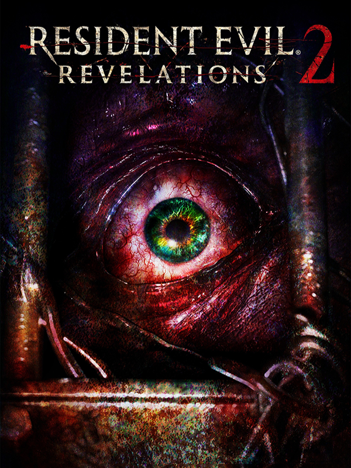

Resident Evil Revelations 2
Resident Evil Revelations 2
Detalhes
 |
|
| Tempo de jogo | Não Jogado |
| Última Atividade | Nunca |
| Adicionado | 07/06/2026 0:35:51 |
| Modificado | 07/06/2026 0:49:26 |
| Status de Conclusão | Not Played |
| Biblioteca | Steam |
| Fonte | Steam |
| Plataforma | PC (Windows) |
| Data de Lançamento | 24/02/2015 |
| Pontuação da Comunidade | 72 |
| Avaliação da crítica | 73 |
| Pontuação do Usuário | |
| Gênero | Adventure Shooter |
| Desenvolvedor | Capcom |
| Editor | Capcom Sony Computer Entertainment |
| Funções | Co-Operative Multiplayer Single Player Split Screen |
| Links | Official Website Steam Wikipedia Community Wiki Twitch Nintendo Playstation |
| Tag | |
Descrição
O início da estória do Resident Evil Revelations 2 mostra o retorno dramático de Claire Redfield, favorita entre os fãs. Sobrevivente do incidente em Raccoon City, mostrado em jogos anteriores da série Resident Evil, Claire agora trabalha para a organização anti-bioterrorismo Terra Save. Moira Burton está em sua festa de boas-vindas na Terra Save quando forças armadas desconhecidas entrem invadem o local. Claire e Moira caem e perdem os sentidos, acordando depois em uma prisão sombria e abandonada. Trabalhando juntas, elas devem descobrir quem as capturou, e desvendar qual é seu plano. Será que Claire e Moira conseguirão sair vivas depois de descobrir a razão porque foram levadas a esta ilha remota? Uma estória com várias reviravoltas que deixarão os jogadores em suspense a cada passo.
Seguindo para a remota ilha-prisão em busca de sua filha desaparecida, Barry Burton encontra uma nova personagem, Natalia Korda, uma garota que tem um estranho poder que a permite sentir inimigos e itens escondidos. Utilizando esta habilidade, além da experiência em combate de Barry, os jogadores terão que alternar entre os dois para sobreviver à misteriosa ilha e encontrar Moira. Com inimigos aterrorizantes espreitando em cada esquina, Barry terá que usar sua munição com moderação, no melhor estilo survival horror clássico.
Como uma evolução da estória em episódios do Resident Evil Revelations original, Resident Evil Revelations 2 será lançado inicialmente como uma série de episódios para download, começando no dia 24 de fevereiro de 2015. Os jogadores também terão a opção de comprar a Temporada completa ou a Coletânea, garantindo aos fãs acesso a cada episódio assim que eles forem lançados, além de conteúdo adicional. Cada episódio do Resident Evil Revelations 2 inclui conteúdo para o modo raide e dois cenários jogáveis, focados na campanha de Claire e Moira, que já havia sido divulgada, e na campanha de Barry e Natalia, confirmada recentemente.
1. Raid Mode online co-op functionality to be added at a later date.
Seguindo para a remota ilha-prisão em busca de sua filha desaparecida, Barry Burton encontra uma nova personagem, Natalia Korda, uma garota que tem um estranho poder que a permite sentir inimigos e itens escondidos. Utilizando esta habilidade, além da experiência em combate de Barry, os jogadores terão que alternar entre os dois para sobreviver à misteriosa ilha e encontrar Moira. Com inimigos aterrorizantes espreitando em cada esquina, Barry terá que usar sua munição com moderação, no melhor estilo survival horror clássico.
Como uma evolução da estória em episódios do Resident Evil Revelations original, Resident Evil Revelations 2 será lançado inicialmente como uma série de episódios para download, começando no dia 24 de fevereiro de 2015. Os jogadores também terão a opção de comprar a Temporada completa ou a Coletânea, garantindo aos fãs acesso a cada episódio assim que eles forem lançados, além de conteúdo adicional. Cada episódio do Resident Evil Revelations 2 inclui conteúdo para o modo raide e dois cenários jogáveis, focados na campanha de Claire e Moira, que já havia sido divulgada, e na campanha de Barry e Natalia, confirmada recentemente.
CARACTERÍSTICAS
- A volta do survival horror – Uma estória completamente nova na saga Resident Evil Revelations chega na forma de episódios para download semanais.
- Vivencie o evento de terror da temporada – Cada episódio semanal oferecerá horas de jogo aterrorizantes e momentos dramáticos que deixarão os jogadores ansiosos aguardando a conclusão dessa emocionante estória de terror.
- Clare Redfield e Moira Burton – Claire, favorita entre os fãs, retorna ao terror que a atormentou no passado ao lado de Moira Burton, filha do lendário Barry Burton, personagem clássico da série Resident Evil.
- Barry está de volta! – Barry Burton, membro da equipe S.T.A.R.S. original e favorito entre os fãs, está de volta, em busca de sua filha desaparecida, presa em uma remota ilha-prisão.
- O mal está à espreita – O terror é o que está reservado aos jogadores em cada esquina do que parece ser uma prisão abandonada em uma ilha remota. Será que é possível escapar de lá?
- Novos tipos de inimigos – Os Rotten tem ossos visíveis e não param por nada em sua caça aos vivos, e os terríveis Revenant são formados por partes costuradas de seres humanos.
- Jogo cooperativo – Os jogadores terão que alternar entre dois personagens (Claire/Moira, Barry/Natalia) para superar este pesadelo.
- Robusto modo raide – Além do elaborado modo estória, o modo raide volta com seu viciante combate de ação rápida. O novo e aprimorado modo raide oferece 15 personagens e mais de 200 estágios, com muito conteúdo novo, como estágios de títulos anteriores da série RE, uma mecânica de progressão mais detalhada, níveis de dificuldade adicionais, novas armas e peças e 4x mais habilidades de personagens do que no Revs 1.
1. Raid Mode online co-op functionality to be added at a later date.